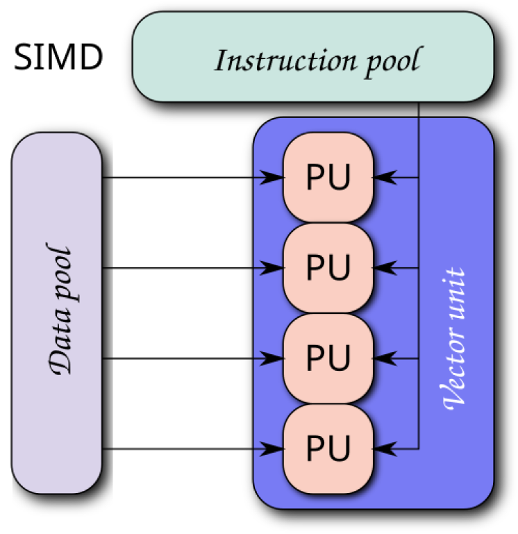

Single instruction, multiple data (SIMD) is a type of parallel computing (processing) in Flynn's taxonomy. SIMD describes computers with multiple processing elements that perform the same operation on multiple data points simultaneously. SIMD can be internal (part of the hardware design) and it can be directly accessible through an instruction set architecture (ISA), but it should not be confused with an ISA.
Such machines exploit data level parallelism, but not concurrency: there are simultaneous (parallel) computations, but each unit performs exactly the same instruction at any given moment (just with different data). A simple example is to add many pairs of numbers together, all of the SIMD units are performing an addition, but each one has different pairs of values to add. SIMD is especially applicable to common tasks such as adjusting the contrast in a digital image or adjusting the volume of digital audio. Most modern central processing unit (CPU) designs include SIMD instructions to improve the performance of multimedia use. In recent CPUs, SIMD units are tightly coupled with cache hierarchies and prefetch mechanisms, which minimize latency during large block operations. For instance, AVX-512-enabled processors can prefetch entire cache lines and apply fused multiply-add operations (FMA) in a single SIMD cycle.